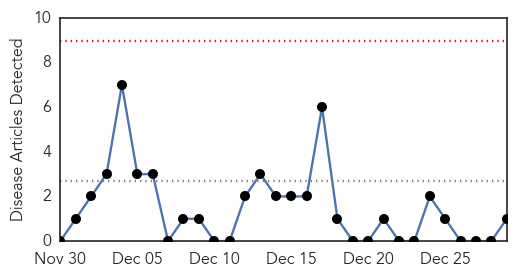
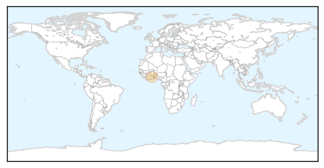
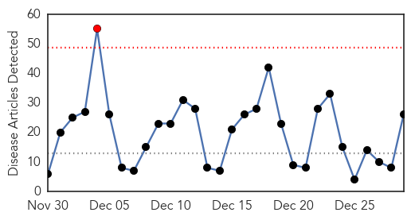
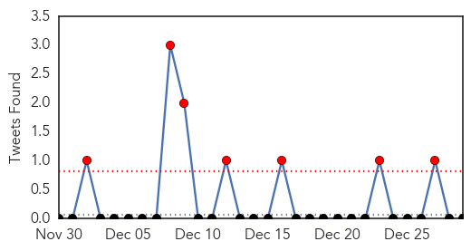
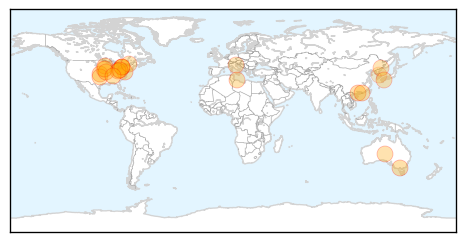
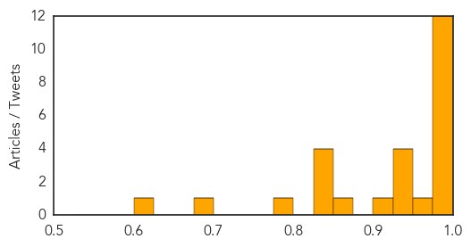

Cholera
30-Day Web Trend
0 alerts, 0 warnings

30-Day Twitter Trend
0 alerts, 0 warnings

Article Locations
Article Confidences

Top Articles:
Top Tweets:
-
No tweets found for Dec 29, 2014
Influenza
30-Day Web Trend
1 alerts, 0 warnings

30-Day Twitter Trend
7 alerts, 0 warnings

Article Locations
Article Confidences
Top Articles:
- 0.999
- Three children dead in Minnesota from flu outbreak
- 0.998
- Contagion calculation: Forecasting and tracking outbreaks of influenza
- 0.998
- Widespread flu levels found now in Iowa, Illinois
- 0.996
- Earlier, more severe flu season hits Maryland
- 0.995
- 14 flu cases confirmed so far in Monroe County
- 0.994
- Flu vaccine might fall short, health officials warn
- 0.989
- Ontario ERs 'overwhelmed' as flu hits harder than usual
- 0.988
- Missouri hit by largest flu season since 2009
- 0.984
- 3 children died from flu complications in last month
- 0.984
- Know the facts, protect yourself and loved ones from the flu
- 0.983
- First Confirmed Case of Bird Flu In Hong Kong, Response Level Raised To 'Serious'
- 0.976
- Hong Kong Confirms First Case Of Bird Flu This Winter
- 0.954
- Oklahoma at risk for flu outbreak, officials say
- 0.944
- WFMJ.com News weather sports for Youngstown-Warren Ohio
- 0.939
- Difference Between Cold, Flu, Allergies
- 0.931
- Flu jab video recorded by health visitor after son was badly affected by the disease
- 0.929
- Bird flu kills five in Libya
- 0.916
- Hospitals issue stricter visiting rules during flu season — The Medina County Gazette
- 0.871
- Another Outbreak of Avian Flu Confirmed in Japan
- 0.847
- /R E P E A T -- Get Added Protection Against H3N2 with A.Vogel's Clinically... -- MONTREAL, Dec. 26, 2014
- 0.845
- China, U.S. study retraces emergence of deadly H7N9 strain in humans - Xinhua
- 0.840
- Flu hits Northwood; clients’ movements restricted
- 0.828
- Toronto sees surge in flu cases; elderly most at risk
- 0.798
- H5N8 popped up in Italy, Germany and Netherlands
- 0.681
- Flu forces visitation restrictions at area hospitals
- 0.603
- (LEAD) S. Korea confirms additional case of avian influenza
Top Tweets:
-
No tweets found for Dec 29, 2014